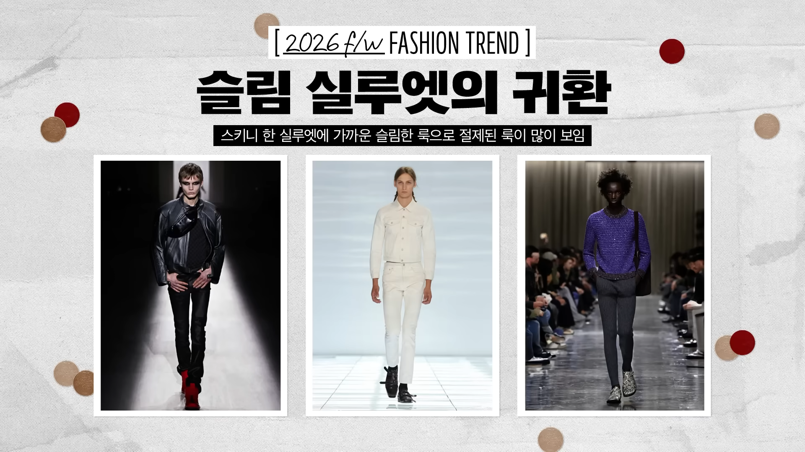
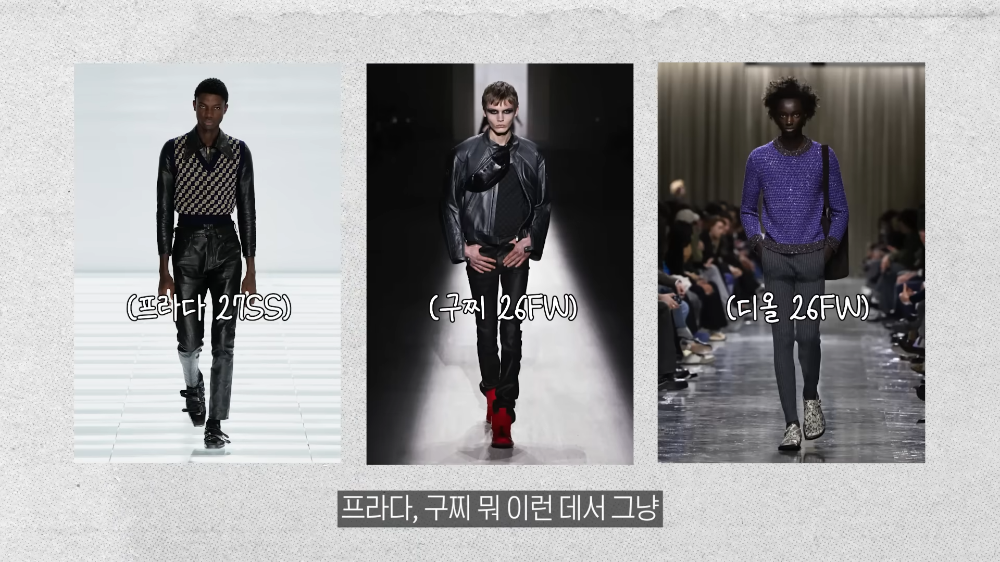
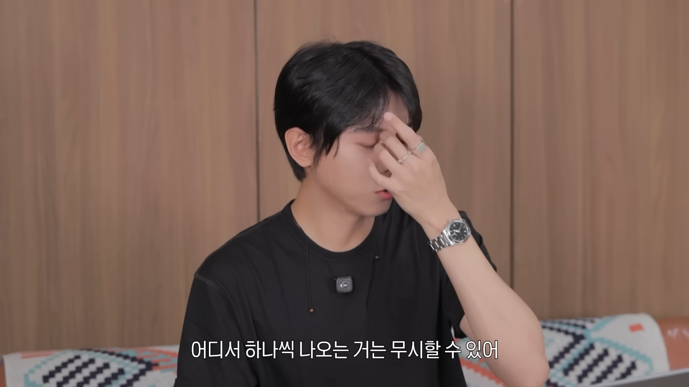

좆끼니진 ㅋㅋㅋ
옷장에서 썩고 있는 드블코 한장씩 준비시켜야겠지?



좆끼니진 ㅋㅋㅋ
옷장에서 썩고 있는 드블코 한장씩 준비시켜야겠지?
누벼서입는진 누디진
요즘 세미와이드에서 좀 넉넉한 스트레이트가 이쁘든데
비엔나 소세지 룩 싫어...
다 꺼져 와이드 핏이 최고다
유행이고 나발이고 와이드 핏만이 나에게 가장 어울리는 핏이다.
그냥 스트레이트 사라
좆합 똥싼바지보다 아주살짝 나음
다들 안입을거라고 하지만 결국 유행을 선도하는건 1020대들이니 걔들 마음에 달렸지
90들은 ㅈ끼니 경험 해봤으니 다시는 안입고 싶겠지만 1020들은 처음이니까
부끼니진..
다시 와도 난 이제 못입는다
와이드핏도 이제 지겹다는거지, 결국 이전과 다르게가 패션이나 유행이니까, 마운자로 위고비 유행으로 살빼기도 쉬워졌고, 그리고 와이드는 옷 자체가 이쁘지는 않자나. 결국 유행 안타고 이쁜건 레귤러에서 슬림핏 사이 인듯. 스키니는 좀 ㅠ
슬림핏이 결코 ㅈ끼니진은 아닌데
안입으면 유행 못따라간다고 뒤쳐지나
이제 못입어.. 유행못따라간다